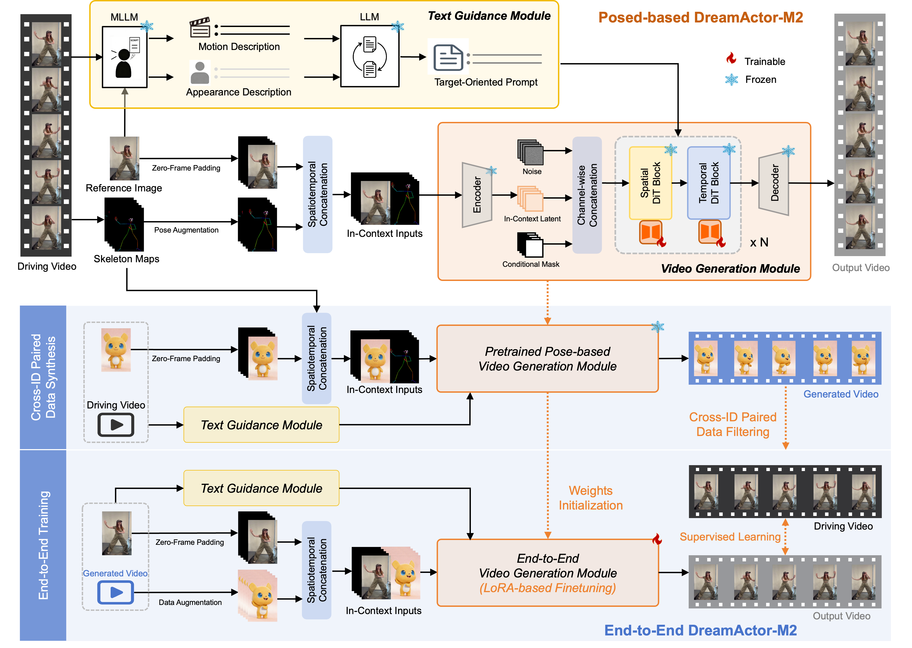
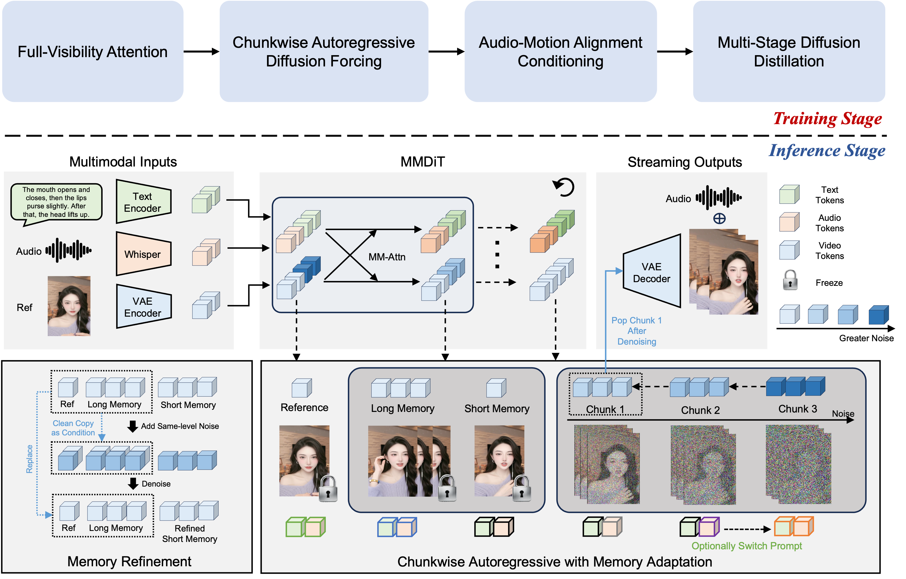
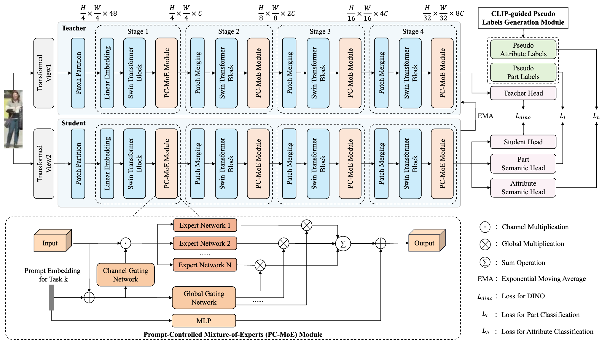
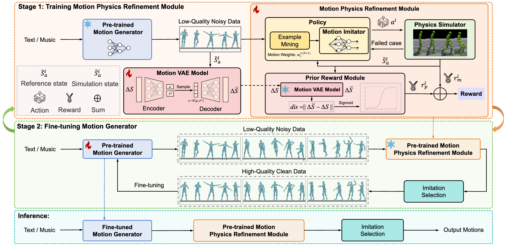
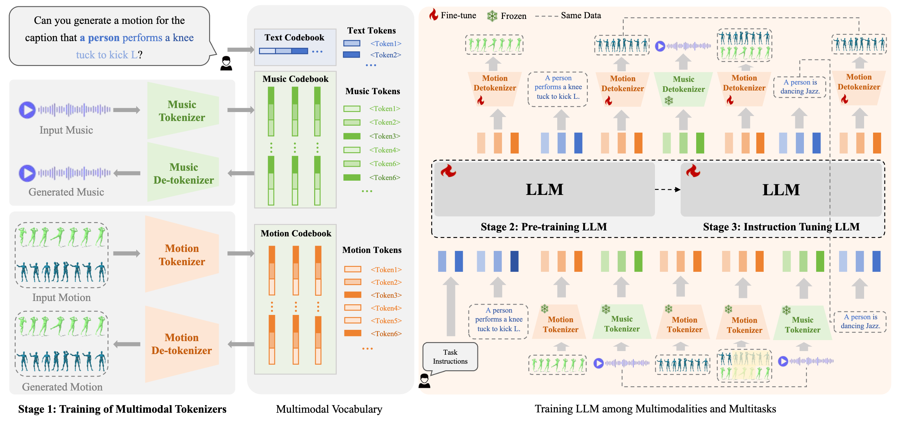
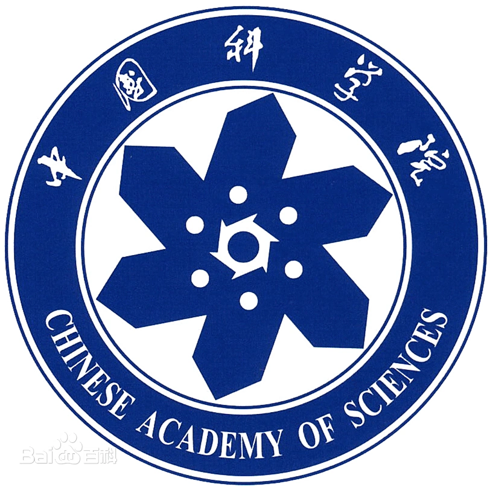

|
Before embarking on my doctoral studies, I worked as a Speech Recognition Algorithm Engineer at Xiaomi Group AI Lab from 2021.7 to 2022.8, supervised by Dr. Daniel Povey (IEEE Fellow).
I obtained my master degree in computer technology from University of the Chinese Academy of Science in 2021.7, supervised by Prof. Shiguang Shan (IEEE Fellow) and Associate Prof. Shuang Yang. Expected graduation in 2026, open to postdoc and research scientist opportunities. |
|
|
|
|  |
DreamActor-M2: Universal Character Image Animation via Spatiotemporal In-Context Learning
Mingshuang Luo*, Shuang Liang*, Zhengkun Rong*, Yuxuan Luo†, Tianshu Hu§, Ruibing Hou§, Hong Chang, Yong Li, Yuan Zhang, Mingyuan Gao Tech Report, 2026 project page / arxiv We present DreamActor-M2, a universal character image animation framework that reformulates motion conditioning as a spatiotemporal in-context learning task. Our design harnesses the inherent generative priors of video foundation models while facilitating a critical evolution toward pose-free, end-to-end motion transfer directly from raw videos. |
|  |
FlowAct-R1: Towards Interactive Humanoid Video Generation
FlowAct Team, ByteDance Intelligent Creation Tech Report, 2026 project page / arxiv We present FlowAct-R1, a novel framework that enables lifelike, responsive, and high-fidelity humanoid video generation for seamless real-time interaction. |
|  |
CLIP-Guided Adaptable Self-Supervised Learning for Human-Centric Visual Tasks
Mingshuang Luo, Ruibing Hou*, Bo Chao, Hong Chang, Zimo Liu*, Yaowei Wang, Shiguang Shan TMM, 2026 project page / arxiv We propose CLASP (CLIP-guided Adaptable Self-suPervised learning), a novel framework designed for unsupervised pretraining in human-centric visual tasks. |
|  |
Morph: A Motion-free Physics Optimization Framework for Human Motion Generation
Zhuo Li*, Mingshuang Luo*, Ruibing Hou†, Xin Zhao, Hao Liu, Hong Chang, Zimo Liu, Chen Li ICCV, 2025 project page / arxiv We propose Morph, a Motion-Free physics optimization framework, consisting of a Motion Generator and a Motion Physics Refinement module, for enhancing physical plausibility without relying on expensive real-world motion data. |
|  |
CLIP-Guided Adaptable Self-Supervised Learning for Human-Centric Visual Tasks
Mingshuang Luo, Ruibing Hou*, Zhuo Li, Hong Chang, Zimo Liu, Yaowei Wang, Shiguang Shan NeurIPS, 2024 project page / arxiv We present M3GPT, an advanced Multimodal, Multitask framework for Motion comprehension and generation. |
 |
2021.07 - 2022.08, Beijing I was a Speech Recognition Algorithm Engineer. Advisor: Dr. Daniel Povey (IEEE Fellow) |
|
2022.08 - Present, Beijing I was a PhD Student of Computer Science and Technology. Research Advisor: Prof. Hong Chan |
|
|  |
2018.09 - 2021.07, Beijing I received my Master Degree of Computer Technology in 2021. Research Advisor: Prof. Shiguang Shan (IEEE Fellow) |
|
2014.09 - 2018.06, Xiangtan I received my B.S Degree of Electric Information Science and Technology. |

This homepage is designed based on Jon Barron's website and
deployed on Github
Pages. Last updated: Jan. 2026
© 2026 Mingshuang Luo
罗明双